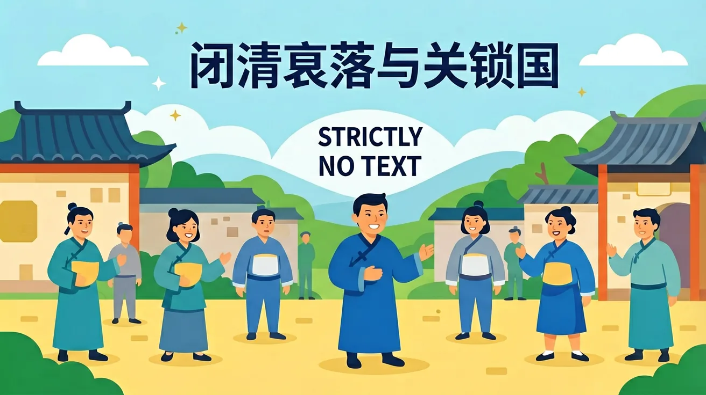
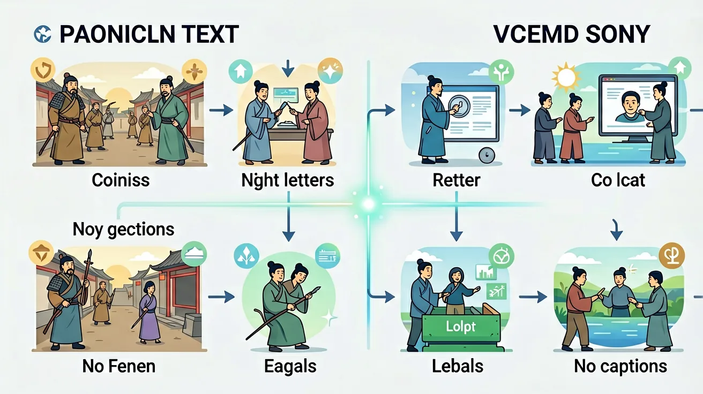

1. 你知道明清时期中国主要的经济形式是什么吗？2. 你能说出清朝实行闭关锁国政策的一个具体表现吗？3. 为什么说科举制度在明清时期变得僵化？
1. 比较明清时期中国与欧洲在科技发展方面的主要差异。2. 分析闭关锁国政策对清朝的长期影响。3. 列举两个导致明清衰落的政治制度因素。
常见误区：学生往往认为闭关锁国是完全禁止对外贸易。错因分析：实际上清朝保留了广州一口通商，并非完全封闭。诊断建议：通过具体史实如‘公行制度’说明政策的复杂性。
迁移探究：假设你是19世纪初的清朝官员，请设计一份改革方案，既要维护国家安全，又要促进中外交流。分析你的方案可能遇到的阻力及应对策略。
先独立作答，再点选项查看对错与错因。
明清时期，中国对外贸易的主要商品不包括以下哪项？
以下哪项是清朝实施闭关锁国政策的主要原因？
鸦片战争后，清政府被迫开放的通商口岸不包括以下哪个城市？
清朝实施闭关锁国政策后，对外贸易仅限于____一口通商。
答案：广州
清朝实施闭关锁国政策后，对外贸易仅限于广州一口通商。
鸦片战争后，清政府被迫签订了____条约，开放了多个通商口岸。
答案：南京
鸦片战争后，清政府被迫签订了南京条约，开放了多个通商口岸。
以下哪项最能说明明清时期中国对外贸易的特点？
探究明清时期中国对外贸易由盛转衰的原因及其影响。
❓ 为什么清朝要闭关锁国，自己关起门来不难受吗？
❓ 课本说闭关锁国导致落后，那当时其他国家是怎么做的？
❓ 明朝和清朝的衰落原因一样吗？感觉都是皇帝不行？
学完这一课，这些问题你都能自信地回答。
🎯 能说出闭关锁国的3个具体表现
🎯 能分析明清衰落与西方崛起的2个关键对比点
🎯 能判断史料中反映闭关政策的典型现象
将衰落原因拆解为政治/经济/科技三层面
用白银外流案例说明经济封闭后果
对比同期英国工业革命与清朝农业经济
观察广州十三行图片理解有限开放
用'信息茧房'类比闭关锁国的危害
✅ 广州十三行保留有限贸易通道
💡 教材强调'严格限制'而非'绝对禁止'
✅ 需结合小农经济局限性与制度僵化
💡 忽视结构性因素的分析
口诀：海禁严，科技缓，白银流走国力短
类比：像小区拆了大门快递柜，看似安全实则生活不便
清朝闭关锁国政策的主要表现是？
明清时期导致白银外流的主要商品是？
（中考真题）下列哪项最能体现闭关政策对科技的影响？
若用手机信号比喻，闭关政策类似？
对比17世纪中英两国，根本差异在于？
And：学生知道明清时期中国曾限制对外贸易
But：但不知道具体措施如何影响国家发展
Therefore：通过具体政策分析理解封闭的危害
清朝1757年颁布《防范外夷规条》，仅保留广州十三行一处通商口岸。外国商人必须通过特许商行交易，且不得学习中文、携带家属。例如英国马戛尔尼使团1793年带来蒸汽机等科技产品，乾隆皇帝却以'天朝物产丰盈'为由拒绝贸易请求，错失工业革命交流机会。
🌍 就像班级微信群突然设置'仅管理员可发言'，其他同学无法分享新知识，久而久之班级整体水平就会落后。
清朝闭关锁国最严重的表现是？

